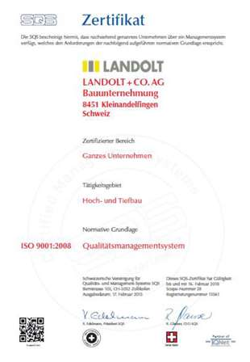

Arbeitssicherheit/KOPAS
Die Arbeitssicherheit und der Gesundheitsschutz sind im Rahmen der Branchenlösung in unserem prozessorientierten Managementsystem integriert.
Unsere Kontaktperson Arbeitssicherheit (KOPAS), Theo Bühler, der Unternehmung unterstützt alle Mitarbeiterinnen und Mitarbeiter, insbesondere die Poliere, Werkmeister, Bauführer und Bereichsleiter, bei der Umsetzung der Ziele betreffend Arbeitssicherheit und Gesundheitsschutz.
Tägliche Kontrollen durch das Baustellenpersonal vor Ort zusammen mit der monatlichen Rapportierung (Baustellenrundgang) des Bauführers und des Poliers sowie periodischer Stichkontrollen durch den KOPAS gewährleisten die Sicherheit unserer Baustellen.
Die Anforderung an das gesamte Baukader im Bezug der Arbeitssicherheit steigt stetig in Folge der Verschärfung der Gesetzgebung und Richtlinien. Wir setzen grossen Einsatz in die fortdauernde Schulung unser gesamtes Personal sowie unsere Subunternehmer auf unseren Baustellen.
Dank unermüdlichen Einsatz der Geschäftsleitung, dem Kader und dem sensibilisiertem Personal, sowie der Bereitstellung von eigenem, gut gewartetem und einwandfreiem Inventar liegen unsere Unfallzahlen weit unter dem schweizerischen Durchschnitt des Bauhauptgewerbes.

KOPAS Theo Bühler

Polo Park, Seuzach
Neubau Polo Park mit Stallungen, Betriebsgebäude und Ringleitung.
Bauherr: Polo Park Zürich AG

Schulhaus Volketswil
Schulhauserweiterung mit einer Einstellhalle und einer Turnhalle im 2. OG.
Bauherr: Schulverwaltung Volketswil
Schulungstermine 2016
Polierschulung zur Arbeitssicherheit, insbesondere der 8 lebenswichtigen Regeln im Hochbau und der 9 lebenswichtigen Regeln im Tiefbau sowie das Landolt Gruppe-System der Dekcenschalungen über 3m.
Schulung des Baustellenpersonals durch den direkt vorgesetzten Polier zu den Themen der diesjährigen Polierschulung (Lebenswichtige Regeln)
Spezialvertiefungskurs für die Arbeiten mit Sicherungssystemen
